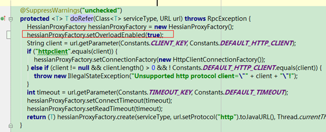
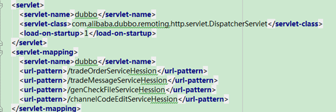
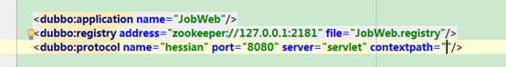
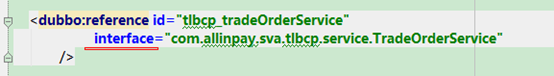
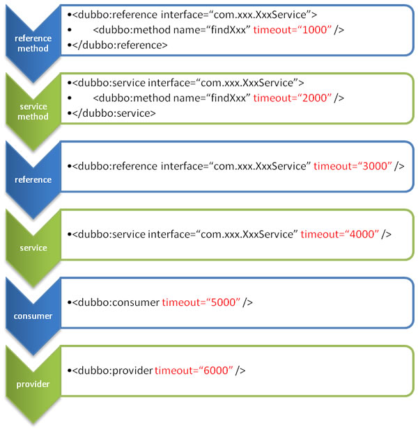

dubbo实践
dubbo整个服务框架分为客户端、服务端以及注册中心和监控中心
服务端负责提供api服务。
客户端负责获取和使用api服务。
注册中心负责两个主要功能
1. 服务端把服务注册到注册中心
2. 客户端从注册中心获取地址
监控中心主要负责：监控服务调用情况
dubbo支持多协议，依赖容器，可选配置比较多。
我们以使用hessian协议、javaee web容器、zookeeper作为注册中心为例，介绍使用dubbo的方式。
需要准备客户端war和服务端war，准备注册中心zookeeper集群和监控中心程序。
1. 部署注册中心
参考第9节注册中心设置
2. 部署监控中心
监控中心程序可以在dubbo编译输出中获取
( dubbo-simple\dubbo-monitor-simple\target\dubbo-monitor-simple-2.5.4-SNAPSHOT-assembly.tar.gz)
监控中心使用的是jetty服务，注意端口和目录修改，可以保持默认配置。
配置参数修改，主要修改注册中心的地址
dubbo.registry.address=zookeeper://127.0.0.1:2181
dubbo.protocol.port=7070
dubbo.jetty.port=8080
dubbo.jetty.directory=${user.home}/monitor
dubbo.charts.directory=${dubbo.jetty.directory}/charts
dubbo.statistics.directory=${user.home}/monitor/statistics
3. 客户端war程序部署到web容器中
4. 服务端war部署到web程序中
启动的时候首先启动注册中心，否则服务无法启动。
监控中心作为可选，可以不用部署。线上环境最好部署。
dubbo采用git管理
git clone https://github.com/alibaba/dubbo.git dubbo
我们使用的是hessian协议，如果api提供方，有些服务是重载的。必须在客户端添加
hessianProxyFactory.setOverloadEnabled(true);
代码修改如下
com.alibaba.dubbo.rpc.protocol.hessian.HessianProtocol#doRefer

需要maven编译
mvn clean install -Dmaven.test.skip
在dubbo\target\ 目录下
dubbo-2.5.4-SNAPSHOT.jar dubbo的版本
在dubbo-simple\dubbo-monitor-simple\target\目录下
dubbo-monitor-simple-2.5.4-SNAPSHOT-assembly.tar.gz 监控中心程序
http://github.com/alibaba/dubbo
dubbo: 2.5.3
httpclient: 4.1.2 可选
zookeeper: 3.3.3
hessian: 4.0.7
zkclient: 0.1 注意mvn库是1.6jdk编译的，使用1.5jdk需要重新编译
https://github.com/sgroschupf/zkclient 使用的0.5dev版本
<dependency>
<groupId>com.alibaba</groupId>
<artifactId>dubbo</artifactId>
<version>2.5.3</version>
</dependency>
<dependency>
<groupId>com.github.sgroschupf</groupId>
<artifactId>zkclient</artifactId>
<version>0.1</version>
</dependency>
<dependency>
<groupId>org.apache.zookeeper</groupId>
<artifactId>zookeeper</artifactId>
<version>3.3.3</version>
</dependency>
<dependency>
<groupId>com.caucho</groupId>
<artifactId>hessian</artifactId>
<version>4.0.7</version>
</dependency>
<!-- 和本地bean一样实现服务 -->
<bean id="demoService" class="com.alibaba.dubbo.demo.provider.DemoServiceImpl" />
<!-- 声明需要暴露的服务接口 -->
<dubbo:service interface="com.alibaba.dubbo.demo.DemoService" ref="demoService" />

定义拦截服务的路径，如果没有页面可以使用/拦截

port为端口号必须设置和web容器的端口号一致， contexpath为web contextpath,注意发布时候的路径
<?xml version="1.0" encoding="UTF-8"?>
<beans xmlns="http://www.springframework.org/schema/beans"
xmlns:xsi="http://www.w3.org/2001/XMLSchema-instance"
xmlns:dubbo="http://code.alibabatech.com/schema/dubbo"
xsi:schemaLocation="http://www.springframework.org/schema/beans http://www.springframework.org/schema/beans/spring-beans-3.0.xsd
http://code.alibabatech.com/schema/dubbo http://code.alibabatech.com/schema/dubbo/dubbo.xsd">
<dubbo:service interface="com.allinpay.sva.tlbcp.service.TradeOrderService"
ref="tradeOrderService"/>
<dubbo:service interface="com.allinpay.sva.tlbcp.service.TradeMessageService"
ref="tradeMessageService"/>
</beans>
<servlet>
<servlet-name>dubbo</servlet-name>
<servlet-class>com.alibaba.dubbo.remoting.http.servlet.DispatcherServlet</servlet-class>
<load-on-startup>1</load-on-startup>
</servlet>
<servlet-mapping>
<servlet-name>dubbo</servlet-name>
<url-pattern>/com.allinpay.sva.tlbcp.service.TradeOrderService</url-pattern>
<url-pattern>/com.allinpay.sva.tlbcp.service.TradeMessageService</url-pattern>
</servlet-mapping>

通过spring直接获取 id=”tlbcp_tradeOrderService”
消费者也必须是一个程序
<dubbo:application name="TLBCPaymentWeb"/>
<dubbo:registry address="${dubbo.registry.address}" file="TLBCPaymentWeb.registry"/>
<dubbo:monitor protocol="registry" />
<?xml version="1.0" encoding="UTF-8"?>
<beans xmlns="http://www.springframework.org/schema/beans"
xmlns:xsi="http://www.w3.org/2001/XMLSchema-instance"
xmlns:dubbo="http://code.alibabatech.com/schema/dubbo"
xsi:schemaLocation="http://www.springframework.org/schema/beans http://www.springframework.org/schema/beans/spring-beans-3.0.xsd
http://code.alibabatech.com/schema/dubbo http://code.alibabatech.com/schema/dubbo/dubbo.xsd">
<dubbo:application name="TLBCPaymentWeb"/>
<dubbo:registry address="${dubbo.registry.address}" file="TLBCPaymentWeb.registry"/>
<dubbo:monitor protocol="registry" />
<dubbo:consumer retries="0"/>
<dubbo:reference id="tlbcp_tradeOrderService"
interface="com.allinpay.sva.tlbcp.service.TradeOrderService"
/>
<dubbo:reference id="tlbcp_tradeMessageService"
interface="com.allinpay.sva.tlbcp.service.TradeMessageService"
/>
</beans>
使用zookeeper集群，zookeeper单机不可靠
从Apache网站上（zookeeper.apache.org）下载ZooKeeper软件包，我选择了3.3.4版本的（zookeeper-3.3.4.tar.gz），在一台Linux机器上安装非常容易，只需要解压缩后，简单配置一下即可以启动ZooKeeper服务器进程。
将zookeeper-3.3.4/conf目录下面的 zoo_sample.cfg修改为zoo.cfg，配置文件内容如下所示：
[plain] view plaincopy
1. tickTime=2000
2. dataDir=/home/hadoop/storage/zookeeper
3. clientPort=2181
4. initLimit=5
5. syncLimit=2
上面各个配置参数的含义也非常简单，引用如下所示：
[plain] view plaincopy
1. tickTime —— the basic time unit in milliseconds used by ZooKeeper. It is used to do heartbeats and the minimum session timeout will be twice the tickTime.
2. dataDir —— the location to store the in-memory database snapshots and, unless specified otherwise, the transaction log of updates to the database.
3. clientPort —— the port to listen for client connections
下面启动ZooKeeper服务器进程：
[plain] view plaincopy
1. cd zookeeper-3.3.4/
2. bin/zkServer.sh start
通过jps命令可以查看ZooKeeper服务器进程，名称为QuorumPeerMain。
在客户端连接ZooKeeper服务器，执行如下命令：
[plain] view plaincopy
1. bin/zkCli.sh -server dynamic:2181
上面dynamic是我的主机名，如果在本机执行，则执行如下命令即可：
[plain] view plaincopy
1. bin/zkCli.sh
客户端连接信息如下所示：
接着，可以使用help查看Zookeeper客户端可以使用的基本操作命令。
ZooKeeper分布式模式安装（ZooKeeper集群）也比较容易，这里说明一下基本要点。
首先要明确的是，ZooKeeper集群是一个独立的分布式协调服务集群，“独立”的含义就是说，如果想使用ZooKeeper实现分布式应用的协调与管理，简化协调与管理，任何分布式应用都可以使用，这就要归功于Zookeeper的数据模型（Data Model）和层次命名空间（Hierarchical Namespace）结构，详细可以参考http://zookeeper.apache.org/doc/trunk/zookeeperOver.html。在设计你的分布式应用协调服务时，首要的就是考虑如何组织层次命名空间。
下面说明分布式模式的安装配置，过程如下所示：
第一步：主机名称到IP地址映射配置
ZooKeeper集群中具有两个关键的角色：Leader和Follower。集群中所有的结点作为一个整体对分布式应用提供服务，集群中每个结点之间都互相连接，所以，在配置的ZooKeeper集群的时候，每一个结点的host到IP地址的映射都要配置上集群中其它结点的映射信息。
例如，我的ZooKeeper集群中每个结点的配置，以slave-01为例，/etc/hosts内容如下所示：
[plain] view plaincopy
1. 192.168.0.179 slave-01
2. 192.168.0.178 slave-02
3. 192.168.0.177 slave-03
ZooKeeper采用一种称为Leader election的选举算法。在整个集群运行过程中，只有一个Leader，其他的都是Follower，如果ZooKeeper集群在运行过程中Leader出了问题，系统会采用该算法重新选出一个Leader。因此，各个结点之间要能够保证互相连接，必须配置上述映射。
ZooKeeper集群启动的时候，会首先选出一个Leader，在Leader election过程中，某一个满足选举算的结点就能成为Leader。整个集群的架构可以参考http://zookeeper.apache.org/doc/trunk/zookeeperOver.html#sc_designGoals。
第二步：修改ZooKeeper配置文件
在其中一台机器（slave-01）上，解压缩zookeeper-3.3.4.tar.gz，修改配置文件conf/zoo.cfg，内容如下所示：
[plain] view plaincopy
1. tickTime=2000
2. dataDir=/home/hadoop/storage/zookeeper
3. clientPort=2181
4. initLimit=5
5. syncLimit=2
6. server.1=slave-01:2888:3888
7. server.2=slave-02:2888:3888
8. server.3=slave-03:2888:3888
上述配置内容说明，可以参考http://zookeeper.apache.org/doc/trunk/zookeeperStarted.html#sc_RunningReplicatedZooKeeper。
第三步：远程复制分发安装文件
上面已经在一台机器slave-01上配置完成ZooKeeper，现在可以将该配置好的安装文件远程拷贝到集群中的各个结点对应的目录下：
[plain] view plaincopy
1. cd /home/hadoop/installation/
2. scp -r zookeeper-3.3.4/ hadoop@slave-02:/home/hadoop/installation/
3. scp -r zookeeper-3.3.4/ hadoop@slave-03:/home/hadoop/installation/
第四步：设置myid
在我们配置的dataDir指定的目录下面，创建一个myid文件，里面内容为一个数字，用来标识当前主机，conf/zoo.cfg文件中配置的server.X中X为什么数字，则myid文件中就输入这个数字，例如：
[plain] view plaincopy
1. hadoop@slave-01:~/installation/zookeeper-3.3.4$ echo "1" > /home/hadoop/storage/zookeeper/myid
2. hadoop@slave-02:~/installation/zookeeper-3.3.4$ echo "2" > /home/hadoop/storage/zookeeper/myid
3. hadoop@slave-03:~/installation/zookeeper-3.3.4$ echo "3" > /home/hadoop/storage/zookeeper/myid
按照上述进行配置即可。
第五步：启动ZooKeeper集群
在ZooKeeper集群的每个结点上，执行启动ZooKeeper服务的脚本，如下所示：
[plain] view plaincopy
1. hadoop@slave-01:~/installation/zookeeper-3.3.4$ bin/zkServer.sh start
2. hadoop@slave-02:~/installation/zookeeper-3.3.4$ bin/zkServer.sh start
3. hadoop@slave-03:~/installation/zookeeper-3.3.4$ bin/zkServer.sh start
以结点slave-01为例，日志如下所示：
[plain] view plaincopy
1. hadoop@slave-01:~/installation/zookeeper-3.3.4$ tail -500f zookeeper.out
2. 2012-01-08 06:51:19,117 - INFO [main:QuorumPeerConfig@90] - Reading configuration from: /home/hadoop/installation/zookeeper-3.3.4/bin/../conf/zoo.cfg
3. 2012-01-08 06:51:19,133 - INFO [main:QuorumPeerConfig@310] - Defaulting to majority quorums
4. 2012-01-08 06:51:19,167 - INFO [main:QuorumPeerMain@119] - Starting quorum peer
5. 2012-01-08 06:51:19,227 - INFO [main:NIOServerCnxn$Factory@143] - binding to port 0.0.0.0/0.0.0.0:2181
6. 2012-01-08 06:51:19,277 - INFO [main:QuorumPeer@819] - tickTime set to 2000
7. 2012-01-08 06:51:19,278 - INFO [main:QuorumPeer@830] - minSessionTimeout set to -1
8. 2012-01-08 06:51:19,279 - INFO [main:QuorumPeer@841] - maxSessionTimeout set to -1
9. 2012-01-08 06:51:19,281 - INFO [main:QuorumPeer@856] - initLimit set to 5
10. 2012-01-08 06:51:19,347 - INFO [Thread-1:QuorumCnxManager$Listener@473] - My election bind port: 3888
11. 2012-01-08 06:51:19,393 - INFO [QuorumPeer:/0:0:0:0:0:0:0:0:2181:QuorumPeer@621] - LOOKING
12. 2012-01-08 06:51:19,396 - INFO [QuorumPeer:/0:0:0:0:0:0:0:0:2181:FastLeaderElection@663] - New election. My id = 1, Proposed zxid = 0
13. 2012-01-08 06:51:19,400 - INFO [WorkerReceiver Thread:FastLeaderElection@496] - Notification: 1 (n.leader), 0 (n.zxid), 1 (n.round), LOOKING (n.state), 1 (n.sid), LOOKING (my state)
14. 2012-01-08 06:51:19,416 - WARN [WorkerSender Thread:QuorumCnxManager@384] - Cannot open channel to 2 at election address slave-02/192.168.0.178:3888
15. java.net.ConnectException: Connection refused
16. at sun.nio.ch.SocketChannelImpl.checkConnect(Native Method)
17. at sun.nio.ch.SocketChannelImpl.finishConnect(SocketChannelImpl.java:567)
18. at sun.nio.ch.SocketAdaptor.connect(SocketAdaptor.java:100)
19. at org.apache.zookeeper.server.quorum.QuorumCnxManager.connectOne(QuorumCnxManager.java:371)
20. at org.apache.zookeeper.server.quorum.QuorumCnxManager.toSend(QuorumCnxManager.java:340)
21. at org.apache.zookeeper.server.quorum.FastLeaderElection$Messenger$WorkerSender.process(FastLeaderElection.java:360)
22. at org.apache.zookeeper.server.quorum.FastLeaderElection$Messenger$WorkerSender.run(FastLeaderElection.java:333)
23. at java.lang.Thread.run(Thread.java:662)
24. 2012-01-08 06:51:19,420 - WARN [WorkerSender Thread:QuorumCnxManager@384] - Cannot open channel to 3 at election address slave-03/192.168.0.177:3888
25. java.net.ConnectException: Connection refused
26. at sun.nio.ch.SocketChannelImpl.checkConnect(Native Method)
27. at sun.nio.ch.SocketChannelImpl.finishConnect(SocketChannelImpl.java:567)
28. at sun.nio.ch.SocketAdaptor.connect(SocketAdaptor.java:100)
29. at org.apache.zookeeper.server.quorum.QuorumCnxManager.connectOne(QuorumCnxManager.java:371)
30. at org.apache.zookeeper.server.quorum.QuorumCnxManager.toSend(QuorumCnxManager.java:340)
31. at org.apache.zookeeper.server.quorum.FastLeaderElection$Messenger$WorkerSender.process(FastLeaderElection.java:360)
32. at org.apache.zookeeper.server.quorum.FastLeaderElection$Messenger$WorkerSender.run(FastLeaderElection.java:333)
33. at java.lang.Thread.run(Thread.java:662)
34. 2012-01-08 06:51:19,612 - WARN [QuorumPeer:/0:0:0:0:0:0:0:0:2181:QuorumCnxManager@384] - Cannot open channel to 2 at election address slave-02/192.168.0.178:3888
35. java.net.ConnectException: Connection refused
36. at sun.nio.ch.SocketChannelImpl.checkConnect(Native Method)
37. at sun.nio.ch.SocketChannelImpl.finishConnect(SocketChannelImpl.java:567)
38. at sun.nio.ch.SocketAdaptor.connect(SocketAdaptor.java:100)
39. at org.apache.zookeeper.server.quorum.QuorumCnxManager.connectOne(QuorumCnxManager.java:371)
40. at org.apache.zookeeper.server.quorum.QuorumCnxManager.connectAll(QuorumCnxManager.java:404)
41. at org.apache.zookeeper.server.quorum.FastLeaderElection.lookForLeader(FastLeaderElection.java:688)
42. at org.apache.zookeeper.server.quorum.QuorumPeer.run(QuorumPeer.java:622)
43. 2012-01-08 06:51:19,615 - WARN [QuorumPeer:/0:0:0:0:0:0:0:0:2181:QuorumCnxManager@384] - Cannot open channel to 3 at election address slave-03/192.168.0.177:3888
44. java.net.ConnectException: Connection refused
45. at sun.nio.ch.SocketChannelImpl.checkConnect(Native Method)
46. at sun.nio.ch.SocketChannelImpl.finishConnect(SocketChannelImpl.java:567)
47. at sun.nio.ch.SocketAdaptor.connect(SocketAdaptor.java:100)
48. at org.apache.zookeeper.server.quorum.QuorumCnxManager.connectOne(QuorumCnxManager.java:371)
49. at org.apache.zookeeper.server.quorum.QuorumCnxManager.connectAll(QuorumCnxManager.java:404)
50. at org.apache.zookeeper.server.quorum.FastLeaderElection.lookForLeader(FastLeaderElection.java:688)
51. at org.apache.zookeeper.server.quorum.QuorumPeer.run(QuorumPeer.java:622)
52. 2012-01-08 06:51:19,616 - INFO [QuorumPeer:/0:0:0:0:0:0:0:0:2181:FastLeaderElection@697] - Notification time out: 400
53. 2012-01-08 06:51:20,019 - WARN [QuorumPeer:/0:0:0:0:0:0:0:0:2181:QuorumCnxManager@384] - Cannot open channel to 2 at election address slave-02/192.168.0.178:3888
54. java.net.ConnectException: Connection refused
55. at sun.nio.ch.SocketChannelImpl.checkConnect(Native Method)
56. at sun.nio.ch.SocketChannelImpl.finishConnect(SocketChannelImpl.java:567)
57. at sun.nio.ch.SocketAdaptor.connect(SocketAdaptor.java:100)
58. at org.apache.zookeeper.server.quorum.QuorumCnxManager.connectOne(QuorumCnxManager.java:371)
59. at org.apache.zookeeper.server.quorum.QuorumCnxManager.connectAll(QuorumCnxManager.java:404)
60. at org.apache.zookeeper.server.quorum.FastLeaderElection.lookForLeader(FastLeaderElection.java:688)
61. at org.apache.zookeeper.server.quorum.QuorumPeer.run(QuorumPeer.java:622)
62. 2012-01-08 06:51:20,021 - WARN [QuorumPeer:/0:0:0:0:0:0:0:0:2181:QuorumCnxManager@384] - Cannot open channel to 3 at election address slave-03/192.168.0.177:3888
63. java.net.ConnectException: Connection refused
64. at sun.nio.ch.SocketChannelImpl.checkConnect(Native Method)
65. at sun.nio.ch.SocketChannelImpl.finishConnect(SocketChannelImpl.java:567)
66. at sun.nio.ch.SocketAdaptor.connect(SocketAdaptor.java:100)
67. at org.apache.zookeeper.server.quorum.QuorumCnxManager.connectOne(QuorumCnxManager.java:371)
68. at org.apache.zookeeper.server.quorum.QuorumCnxManager.connectAll(QuorumCnxManager.java:404)
69. at org.apache.zookeeper.server.quorum.FastLeaderElection.lookForLeader(FastLeaderElection.java:688)
70. at org.apache.zookeeper.server.quorum.QuorumPeer.run(QuorumPeer.java:622)
71. 2012-01-08 06:51:20,022 - INFO [QuorumPeer:/0:0:0:0:0:0:0:0:2181:FastLeaderElection@697] - Notification time out: 800
72. 2012-01-08 06:51:20,825 - WARN [QuorumPeer:/0:0:0:0:0:0:0:0:2181:QuorumCnxManager@384] - Cannot open channel to 2 at election address slave-02/192.168.0.178:3888
73. java.net.ConnectException: Connection refused
74. at sun.nio.ch.SocketChannelImpl.checkConnect(Native Method)
75. at sun.nio.ch.SocketChannelImpl.finishConnect(SocketChannelImpl.java:567)
76. at sun.nio.ch.SocketAdaptor.connect(SocketAdaptor.java:100)
77. at org.apache.zookeeper.server.quorum.QuorumCnxManager.connectOne(QuorumCnxManager.java:371)
78. at org.apache.zookeeper.server.quorum.QuorumCnxManager.connectAll(QuorumCnxManager.java:404)
79. at org.apache.zookeeper.server.quorum.FastLeaderElection.lookForLeader(FastLeaderElection.java:688)
80. at org.apache.zookeeper.server.quorum.QuorumPeer.run(QuorumPeer.java:622)
81. 2012-01-08 06:51:20,827 - WARN [QuorumPeer:/0:0:0:0:0:0:0:0:2181:QuorumCnxManager@384] - Cannot open channel to 3 at election address slave-03/192.168.0.177:3888
82. java.net.ConnectException: Connection refused
83. at sun.nio.ch.SocketChannelImpl.checkConnect(Native Method)
84. at sun.nio.ch.SocketChannelImpl.finishConnect(SocketChannelImpl.java:567)
85. at sun.nio.ch.SocketAdaptor.connect(SocketAdaptor.java:100)
86. at org.apache.zookeeper.server.quorum.QuorumCnxManager.connectOne(QuorumCnxManager.java:371)
87. at org.apache.zookeeper.server.quorum.QuorumCnxManager.connectAll(QuorumCnxManager.java:404)
88. at org.apache.zookeeper.server.quorum.FastLeaderElection.lookForLeader(FastLeaderElection.java:688)
89. at org.apache.zookeeper.server.quorum.QuorumPeer.run(QuorumPeer.java:622)
90. 2012-01-08 06:51:20,828 - INFO [QuorumPeer:/0:0:0:0:0:0:0:0:2181:FastLeaderElection@697] - Notification time out: 1600
91. 2012-01-08 06:51:22,435 - WARN [QuorumPeer:/0:0:0:0:0:0:0:0:2181:QuorumCnxManager@384] - Cannot open channel to 2 at election address slave-02/192.168.0.178:3888
92. java.net.ConnectException: Connection refused
93. at sun.nio.ch.SocketChannelImpl.checkConnect(Native Method)
94. at sun.nio.ch.SocketChannelImpl.finishConnect(SocketChannelImpl.java:567)
95. at sun.nio.ch.SocketAdaptor.connect(SocketAdaptor.java:100)
96. at org.apache.zookeeper.server.quorum.QuorumCnxManager.connectOne(QuorumCnxManager.java:371)
97. at org.apache.zookeeper.server.quorum.QuorumCnxManager.connectAll(QuorumCnxManager.java:404)
98. at org.apache.zookeeper.server.quorum.FastLeaderElection.lookForLeader(FastLeaderElection.java:688)
99. at org.apache.zookeeper.server.quorum.QuorumPeer.run(QuorumPeer.java:622)
100. 2012-01-08 06:51:22,439 - WARN [QuorumPeer:/0:0:0:0:0:0:0:0:2181:QuorumCnxManager@384] - Cannot open channel to 3 at election address slave-03/192.168.0.177:3888
101. java.net.ConnectException: Connection refused
102. at sun.nio.ch.SocketChannelImpl.checkConnect(Native Method)
103. at sun.nio.ch.SocketChannelImpl.finishConnect(SocketChannelImpl.java:567)
104. at sun.nio.ch.SocketAdaptor.connect(SocketAdaptor.java:100)
105. at org.apache.zookeeper.server.quorum.QuorumCnxManager.connectOne(QuorumCnxManager.java:371)
106. at org.apache.zookeeper.server.quorum.QuorumCnxManager.connectAll(QuorumCnxManager.java:404)
107. at org.apache.zookeeper.server.quorum.FastLeaderElection.lookForLeader(FastLeaderElection.java:688)
108. at org.apache.zookeeper.server.quorum.QuorumPeer.run(QuorumPeer.java:622)
109. 2012-01-08 06:51:22,441 - INFO [QuorumPeer:/0:0:0:0:0:0:0:0:2181:FastLeaderElection@697] - Notification time out: 3200
110. 2012-01-08 06:51:22,945 - INFO [WorkerReceiver Thread:FastLeaderElection@496] - Notification: 2 (n.leader), 0 (n.zxid), 1 (n.round), LOOKING (n.state), 2 (n.sid), LOOKING (my state)
111. 2012-01-08 06:51:22,946 - INFO [QuorumPeer:/0:0:0:0:0:0:0:0:2181:FastLeaderElection@721] - Updating proposal
112. 2012-01-08 06:51:22,949 - WARN [WorkerSender Thread:QuorumCnxManager@384] - Cannot open channel to 3 at election address slave-03/192.168.0.177:3888
113. java.net.ConnectException: Connection refused
114. at sun.nio.ch.SocketChannelImpl.checkConnect(Native Method)
115. at sun.nio.ch.SocketChannelImpl.finishConnect(SocketChannelImpl.java:567)
116. at sun.nio.ch.SocketAdaptor.connect(SocketAdaptor.java:100)
117. at org.apache.zookeeper.server.quorum.QuorumCnxManager.connectOne(QuorumCnxManager.java:371)
118. at org.apache.zookeeper.server.quorum.QuorumCnxManager.toSend(QuorumCnxManager.java:340)
119. at org.apache.zookeeper.server.quorum.FastLeaderElection$Messenger$WorkerSender.process(FastLeaderElection.java:360)
120. at org.apache.zookeeper.server.quorum.FastLeaderElection$Messenger$WorkerSender.run(FastLeaderElection.java:333)
121. at java.lang.Thread.run(Thread.java:662)
122. 2012-01-08 06:51:22,951 - INFO [WorkerReceiver Thread:FastLeaderElection@496] - Notification: 2 (n.leader), 0 (n.zxid), 1 (n.round), LOOKING (n.state), 1 (n.sid), LOOKING (my state)
123. 2012-01-08 06:51:23,156 - INFO [QuorumPeer:/0:0:0:0:0:0:0:0:2181:QuorumPeer@643] - FOLLOWING
124. 2012-01-08 06:51:23,170 - INFO [QuorumPeer:/0:0:0:0:0:0:0:0:2181:Learner@80] - TCP NoDelay set to: true
125. 2012-01-08 06:51:23,206 - INFO [QuorumPeer:/0:0:0:0:0:0:0:0:2181:Environment@97] - Server environment:zookeeper.version=3.3.3-1203054, built on 11/17/2011 05:47 GMT
126. 2012-01-08 06:51:23,207 - INFO [QuorumPeer:/0:0:0:0:0:0:0:0:2181:Environment@97] - Server environment:host.name=slave-01
127. 2012-01-08 06:51:23,207 - INFO [QuorumPeer:/0:0:0:0:0:0:0:0:2181:Environment@97] - Server environment:java.version=1.6.0_30
128. 2012-01-08 06:51:23,208 - INFO [QuorumPeer:/0:0:0:0:0:0:0:0:2181:Environment@97] - Server environment:java.vendor=Sun Microsystems Inc.
129. 2012-01-08 06:51:23,208 - INFO [QuorumPeer:/0:0:0:0:0:0:0:0:2181:Environment@97] - Server environment:java.home=/home/hadoop/installation/jdk1.6.0_30/jre
130. 2012-01-08 06:51:23,209 - INFO [QuorumPeer:/0:0:0:0:0:0:0:0:2181:Environment@97] - Server environment:java.class.path=/home/hadoop/installation/zookeeper-3.3.4/bin/../build/classes:/home/hadoop/installation/zookeeper-3.3.4/bin/../build/lib/*.jar:/home/hadoop/installation/zookeeper-3.3.4/bin/../zookeeper-3.3.4.jar:/home/hadoop/installation/zookeeper-3.3.4/bin/../lib/log4j-1.2.15.jar:/home/hadoop/installation/zookeeper-3.3.4/bin/../lib/jline-0.9.94.jar:/home/hadoop/installation/zookeeper-3.3.4/bin/../lib/commons-lang-2.4.jar:/home/hadoop/installation/zookeeper-3.3.4/bin/../lib/commons-collections-3.2.jar:/home/hadoop/installation/zookeeper-3.3.4/bin/../lib/commons-cli-1.1.jar:/home/hadoop/installation/zookeeper-3.3.4/bin/../lib/apache-rat-tasks-0.6.jar:/home/hadoop/installation/zookeeper-3.3.4/bin/../lib/apache-rat-core-0.6.jar:/home/hadoop/installation/zookeeper-3.3.4/bin/../src/java/lib/*.jar:/home/hadoop/installation/zookeeper-3.3.4/bin/../conf:/home/hadoop/installation/jdk1.6.0_30/lib/*.jar:/home/hadoop/installation/jdk1.6.0_30/jre/lib/*.jar
131. 2012-01-08 06:51:23,210 - INFO [QuorumPeer:/0:0:0:0:0:0:0:0:2181:Environment@97] - Server environment:java.library.path=/home/hadoop/installation/jdk1.6.0_30/jre/lib/i386/client:/home/hadoop/installation/jdk1.6.0_30/jre/lib/i386:/home/hadoop/installation/jdk1.6.0_30/jre/../lib/i386:/usr/java/packages/lib/i386:/lib:/usr/lib
132. 2012-01-08 06:51:23,210 - INFO [QuorumPeer:/0:0:0:0:0:0:0:0:2181:Environment@97] - Server environment:java.io.tmpdir=/tmp
133. 2012-01-08 06:51:23,212 - INFO [QuorumPeer:/0:0:0:0:0:0:0:0:2181:Environment@97] - Server environment:java.compiler=<NA>
134. 2012-01-08 06:51:23,212 - INFO [QuorumPeer:/0:0:0:0:0:0:0:0:2181:Environment@97] - Server environment:os.name=Linux
135. 2012-01-08 06:51:23,212 - INFO [QuorumPeer:/0:0:0:0:0:0:0:0:2181:Environment@97] - Server environment:os.arch=i386
136. 2012-01-08 06:51:23,213 - INFO [QuorumPeer:/0:0:0:0:0:0:0:0:2181:Environment@97] - Server environment:os.version=3.0.0-14-generic
137. 2012-01-08 06:51:23,213 - INFO [QuorumPeer:/0:0:0:0:0:0:0:0:2181:Environment@97] - Server environment:user.name=hadoop
138. 2012-01-08 06:51:23,214 - INFO [QuorumPeer:/0:0:0:0:0:0:0:0:2181:Environment@97] - Server environment:user.home=/home/hadoop
139. 2012-01-08 06:51:23,214 - INFO [QuorumPeer:/0:0:0:0:0:0:0:0:2181:Environment@97] - Server environment:user.dir=/home/hadoop/installation/zookeeper-3.3.4
140. 2012-01-08 06:51:23,223 - INFO [QuorumPeer:/0:0:0:0:0:0:0:0:2181:ZooKeeperServer@151] - Created server with tickTime 2000 minSessionTimeout 4000 maxSessionTimeout 40000 datadir /home/hadoop/storage/zookeeper/version-2 snapdir /home/hadoop/storage/zookeeper/version-2
141. 2012-01-08 06:51:23,339 - INFO [QuorumPeer:/0:0:0:0:0:0:0:0:2181:Learner@294] - Getting a snapshot from leader
142. 2012-01-08 06:51:23,358 - INFO [QuorumPeer:/0:0:0:0:0:0:0:0:2181:Learner@325] - Setting leader epoch 1
143. 2012-01-08 06:51:23,358 - INFO [QuorumPeer:/0:0:0:0:0:0:0:0:2181:FileTxnSnapLog@254] - Snapshotting: 0
144. 2012-01-08 06:51:25,511 - INFO [WorkerReceiver Thread:FastLeaderElection@496] - Notification: 3 (n.leader), 0 (n.zxid), 1 (n.round), LOOKING (n.state), 3 (n.sid), FOLLOWING (my state)
145. 2012-01-08 06:51:42,584 - INFO [WorkerReceiver Thread:FastLeaderElection@496] - Notification: 3 (n.leader), 0 (n.zxid), 2 (n.round), LOOKING (n.state), 3 (n.sid), FOLLOWING (my state)
我启动的顺序是slave-01>slave-02>slave-03，由于ZooKeeper集群启动的时候，每个结点都试图去连接集群中的其它结点，先启动的肯定连不上后面还没启动的，所以上面日志前面部分的异常是可以忽略的。通过后面部分可以看到，集群在选出一个Leader后，最后稳定了。
其他结点可能也出现类似问题，属于正常。
第六步：安装验证
可以通过ZooKeeper的脚本来查看启动状态，包括集群中各个结点的角色（或是Leader，或是Follower），如下所示，是在ZooKeeper集群中的每个结点上查询的结果：
[plain] view plaincopy
1. hadoop@slave-01:~/installation/zookeeper-3.3.4$ bin/zkServer.sh status
2. JMX enabled by default
3. Using config: /home/hadoop/installation/zookeeper-3.3.4/bin/../conf/zoo.cfg
4. Mode: follower
5.
6. hadoop@slave-02:~/installation/zookeeper-3.3.4$ bin/zkServer.sh status
7. JMX enabled by default
8. Using config: /home/hadoop/installation/zookeeper-3.3.4/bin/../conf/zoo.cfg
9. Mode: leader
10.
11. hadoop@slave-03:~/installation/zookeeper-3.3.4$ bin/zkServer.sh status
12. JMX enabled by default
13. Using config: /home/hadoop/installation/zookeeper-3.3.4/bin/../conf/zoo.cfg
14. Mode: follower
通过上面状态查询结果可见，slave-02是集群的Leader，其余的两个结点是Follower。
另外，可以通过客户端脚本，连接到ZooKeeper集群上。对于客户端来说，ZooKeeper是一个整体（ensemble），连接到ZooKeeper集群实际上感觉在独享整个集群的服务，所以，你可以在任何一个结点上建立到服务集群的连接，例如：
[plain] view plaincopy
1. hadoop@slave-03:~/installation/zookeeper-3.3.4$ bin/zkCli.sh -server slave-01:2181
2. Connecting to slave-01:2181
3. 2012-01-08 07:14:21,068 - INFO [main:Environment@97] - Client environment:zookeeper.version=3.3.3-1203054, built on 11/17/2011 05:47 GMT
4. 2012-01-08 07:14:21,080 - INFO [main:Environment@97] - Client environment:host.name=slave-03
5. 2012-01-08 07:14:21,085 - INFO [main:Environment@97] - Client environment:java.version=1.6.0_30
6. 2012-01-08 07:14:21,089 - INFO [main:Environment@97] - Client environment:java.vendor=Sun Microsystems Inc.
7. 2012-01-08 07:14:21,095 - INFO [main:Environment@97] - Client environment:java.home=/home/hadoop/installation/jdk1.6.0_30/jre
8. 2012-01-08 07:14:21,104 - INFO [main:Environment@97] - Client environment:java.class.path=/home/hadoop/installation/zookeeper-3.3.4/bin/../build/classes:/home/hadoop/installation/zookeeper-3.3.4/bin/../build/lib/*.jar:/home/hadoop/installation/zookeeper-3.3.4/bin/../zookeeper-3.3.4.jar:/home/hadoop/installation/zookeeper-3.3.4/bin/../lib/log4j-1.2.15.jar:/home/hadoop/installation/zookeeper-3.3.4/bin/../lib/jline-0.9.94.jar:/home/hadoop/installation/zookeeper-3.3.4/bin/../lib/commons-lang-2.4.jar:/home/hadoop/installation/zookeeper-3.3.4/bin/../lib/commons-collections-3.2.jar:/home/hadoop/installation/zookeeper-3.3.4/bin/../lib/commons-cli-1.1.jar:/home/hadoop/installation/zookeeper-3.3.4/bin/../lib/apache-rat-tasks-0.6.jar:/home/hadoop/installation/zookeeper-3.3.4/bin/../lib/apache-rat-core-0.6.jar:/home/hadoop/installation/zookeeper-3.3.4/bin/../src/java/lib/*.jar:/home/hadoop/installation/zookeeper-3.3.4/bin/../conf:/home/hadoop/installation/jdk1.6.0_30/lib/*.jar:/home/hadoop/installation/jdk1.6.0_30/jre/lib/*.jar
9. 2012-01-08 07:14:21,111 - INFO [main:Environment@97] - Client environment:java.library.path=/home/hadoop/installation/jdk1.6.0_30/jre/lib/i386/client:/home/hadoop/installation/jdk1.6.0_30/jre/lib/i386:/home/hadoop/installation/jdk1.6.0_30/jre/../lib/i386:/usr/java/packages/lib/i386:/lib:/usr/lib
10. 2012-01-08 07:14:21,116 - INFO [main:Environment@97] - Client environment:java.io.tmpdir=/tmp
11. 2012-01-08 07:14:21,124 - INFO [main:Environment@97] - Client environment:java.compiler=<NA>
12. 2012-01-08 07:14:21,169 - INFO [main:Environment@97] - Client environment:os.name=Linux
13. 2012-01-08 07:14:21,175 - INFO [main:Environment@97] - Client environment:os.arch=i386
14. 2012-01-08 07:14:21,177 - INFO [main:Environment@97] - Client environment:os.version=3.0.0-14-generic
15. 2012-01-08 07:14:21,185 - INFO [main:Environment@97] - Client environment:user.name=hadoop
16. 2012-01-08 07:14:21,188 - INFO [main:Environment@97] - Client environment:user.home=/home/hadoop
17. 2012-01-08 07:14:21,190 - INFO [main:Environment@97] - Client environment:user.dir=/home/hadoop/installation/zookeeper-3.3.4
18. 2012-01-08 07:14:21,197 - INFO [main:ZooKeeper@379] - Initiating client connection, connectString=slave-01:2181 sessionTimeout=30000 watcher=org.apache.zookeeper.ZooKeeperMain$MyWatcher@bf32c
19. 2012-01-08 07:14:21,305 - INFO [main-SendThread():ClientCnxn$SendThread@1061] - Opening socket connection to server slave-01/192.168.0.179:2181
20. Welcome to ZooKeeper!
21. 2012-01-08 07:14:21,376 - INFO [main-SendThread(slave-01:2181):ClientCnxn$SendThread@950] - Socket connection established to slave-01/192.168.0.179:2181, initiating session
22. JLine support is enabled
23. [zk: slave-01:2181(CONNECTING) 0] 2012-01-08 07:14:21,872 - INFO [main-SendThread(slave-01:2181):ClientCnxn$SendThread@739] - Session establishment complete on server slave-01/192.168.0.179:2181, sessionid = 0x134bdcd6b730000, negotiated timeout = 30000
24.
25. WATCHER::
26.
27. WatchedEvent state:SyncConnected type:None path:null
28.
29. [zk: slave-01:2181(CONNECTED) 0] ls /
30. [zookeeper]
当前根路径为/zookeeper。
主机名与IP地址映射配置问题
启动ZooKeeper集群时，如果ZooKeeper集群中slave-01结点的日志出现如下错误：
[plain] view plaincopy
1. java.net.SocketTimeoutException
2. at sun.nio.ch.SocketAdaptor.connect(SocketAdaptor.java:109)
3. at org.apache.zookeeper.server.quorum.QuorumCnxManager.connectOne(QuorumCnxManager.java:371)
4. at org.apache.zookeeper.server.quorum.QuorumCnxManager.connectAll(QuorumCnxManager.java:404)
5. at org.apache.zookeeper.server.quorum.FastLeaderElection.lookForLeader(FastLeaderElection.java:688)
6. at org.apache.zookeeper.server.quorum.QuorumPeer.run(QuorumPeer.java:622)
7. 2012-01-08 06:37:46,026 - INFO [QuorumPeer:/0:0:0:0:0:0:0:0:2181:FastLeaderElection@697] - Notification time out: 6400
8. 2012-01-08 06:37:57,431 - WARN [QuorumPeer:/0:0:0:0:0:0:0:0:2181:QuorumCnxManager@384] - Cannot open channel to 2 at election address slave-02/202.106.199.35:3888
9. java.net.SocketTimeoutException
10. at sun.nio.ch.SocketAdaptor.connect(SocketAdaptor.java:109)
11. at org.apache.zookeeper.server.quorum.QuorumCnxManager.connectOne(QuorumCnxManager.java:371)
12. at org.apache.zookeeper.server.quorum.QuorumCnxManager.connectAll(QuorumCnxManager.java:404)
13. at org.apache.zookeeper.server.quorum.FastLeaderElection.lookForLeader(FastLeaderElection.java:688)
14. at org.apache.zookeeper.server.quorum.QuorumPeer.run(QuorumPeer.java:622)
15. 2012-01-08 06:38:02,442 - WARN [QuorumPeer:/0:0:0:0:0:0:0:0:2181:QuorumCnxManager@384] - Cannot open channel to 3 at election address slave-03/202.106.199.35:3888
很显然，slave-01在启动时连接集群中其他结点（slave-02、slave-03）时，主机名映射的IP与我们实际配置的不一致，所以集群中各个结点之间无法建立链路，整个ZooKeeper集群启动是失败的。
上面错误日志中slave-02/202.106.199.35:3888实际应该是slave-02/202.192.168.0.178:3888就对了，但是在进行域名解析的时候映射有问题，修改每个结点的/etc/hosts文件，将ZooKeeper集群中所有结点主机名到IP地址的映射配置上。
<dubbo:service interface="com.alibaba.hello.api.HelloService" version="1.0.0" ref="helloService"
timeout="300" retry="2" loadbalance="random" actives="0"
/>
timeout最好在这里设置，因为只有服务指导需要用多少时间，客户端的timeout会使用这个
可以在几个地方配置，但是有优先级

· 上图中以timeout为例，显示了配置的查找顺序，其它retries, loadbalance, actives等类似。
o 方法级优先，接口级次之，全局配置再次之。
o 如果级别一样，则消费方优先，提供方次之。
· 其中，服务提供方配置，通过URL经由注册中心传递给消费方。
· 建议由服务提供方设置超时，因为一个方法需要执行多长时间，服务提供方更清楚，如果一个消费方同时引用多个服务，就不需要关心每个服务的超时设置。
· 理论上ReferenceConfig的非服务标识配置，在ConsumerConfig，ServiceConfig, ProviderConfig均可以缺省配置。
比如：中文站有些服务来不及在青岛部署，只在杭州部署，而青岛的其它应用需要引用此服务，就可以将服务同时注册到两个注册中心。
consumer.xml
<?xml version="1.0" encoding="UTF-8"?> <beans xmlns="http://www.springframework.org/schema/beans" xmlns:xsi="http://www.w3.org/2001/XMLSchema-instance" xmlns:dubbo="http://code.alibabatech.com/schema/dubbo" <dubbo:application name="world" /> <!-- 多注册中心配置 --> <dubbo:registry id="hangzhouRegistry" address="10.20.141.150:9090" /> <dubbo:registry id="qingdaoRegistry" address="10.20.141.151:9010" default="false" /> <!-- 向多个注册中心注册 --> <dubbo:service interface="com.alibaba.hello.api.HelloService" version="1.0.0" ref="helloService" registry="hangzhouRegistry,qingdaoRegistry" /> </beans> |
比如：CRM有些服务是专门为国际站设计的，有些服务是专门为中文站设计的。
consumer.xml
<?xml version="1.0" encoding="UTF-8"?> <beans xmlns="http://www.springframework.org/schema/beans" xmlns:xsi="http://www.w3.org/2001/XMLSchema-instance" xmlns:dubbo="http://code.alibabatech.com/schema/dubbo" <dubbo:application name="world" /> <!-- 多注册中心配置 --> <dubbo:registry id="chinaRegistry" address="10.20.141.150:9090" /> <dubbo:registry id="intlRegistry" address="10.20.154.177:9010" default="false" /> <!-- 向中文站注册中心注册 --> <dubbo:service interface="com.alibaba.hello.api.HelloService" version="1.0.0" ref="helloService" registry="chinaRegistry" /> <!-- 向国际站注册中心注册 --> <dubbo:service interface="com.alibaba.hello.api.DemoService" version="1.0.0" ref="demoService" registry="intlRegistry" /> </beans> |
比如：CRM需同时调用中文站和国际站的PC2服务，PC2在中文站和国际站均有部署，接口及版本号都一样，但连的数据库不一样。
consumer.xml
<?xml version="1.0" encoding="UTF-8"?> <beans xmlns="http://www.springframework.org/schema/beans" xmlns:xsi="http://www.w3.org/2001/XMLSchema-instance" xmlns:dubbo="http://code.alibabatech.com/schema/dubbo" <dubbo:application name="world" /> <!-- 多注册中心配置 --> <dubbo:registry id="chinaRegistry" address="10.20.141.150:9090" /> <dubbo:registry id="intlRegistry" address="10.20.154.177:9010" default="false" /> <!-- 引用中文站服务 --> <dubbo:reference id="chinaHelloService" interface="com.alibaba.hello.api.HelloService" version="1.0.0" registry="chinaRegistry" /> <!-- 引用国际站站服务 --> <dubbo:reference id="intlHelloService" interface="com.alibaba.hello.api.HelloService" version="1.0.0" registry="intlRegistry" /> </beans> |
如果只是测试环境临时需要连接两个不同注册中心，使用竖号分隔多个不同注册中心地址：
consumer.xml
<?xml version="1.0" encoding="UTF-8"?> <beans xmlns="http://www.springframework.org/schema/beans" xmlns:xsi="http://www.w3.org/2001/XMLSchema-instance" xmlns:dubbo="http://code.alibabatech.com/schema/dubbo" <dubbo:application name="world" /> <!-- 多注册中心配置，竖号分隔表示同时连接多个不同注册中心，同一注册中心的多个集群地址用逗号分隔 --> <dubbo:registry address="10.20.141.150:9090|10.20.154.177:9010" /> <!-- 引用服务 --> <dubbo:reference id="helloService" interface="com.alibaba.hello.api.HelloService" version="1.0.0" /> </beans> |
Dubbo缺省会在启动时检查依赖的服务是否可用，不可用时会抛出异常，阻止Spring初始化完成，以便上线时，能及早发现问题，默认check=true。 |
关闭某个服务的启动时检查：(没有提供者时报错)
<dubbo:reference interface="com.foo.BarService" check="false" /> |
关闭所有服务的启动时检查：(没有提供者时报错)
<dubbo:consumer check="false" /> |
关闭注册中心启动时检查：(注册订阅失败时报错)
<dubbo:registry check="false" /> |
当一个接口有多种实现时，可以用group区分。 | |||
<dubbo:service group="feedback" interface="com.xxx.IndexService" /> <dubbo:service group="member" interface="com.xxx.IndexService" /> | |||
<dubbo:reference id="feedbackIndexService" group="feedback" interface="com.xxx.IndexService" /> <dubbo:reference id="memberIndexService" group="member" interface="com.xxx.IndexService" /> |
任意组：(2.2.0以上版本支持，总是只调一个可用组的实现)
<dubbo:reference id="barService" interface="com.foo.BarService" group="*" /> |
retry 默认是2。 如果不需要，在consumer中设置为0
<dubbo:consumer retries="0"/>
官方的参考手册
http://alibaba.github.io/dubbo-doc-static/User+Guide-zh.htm